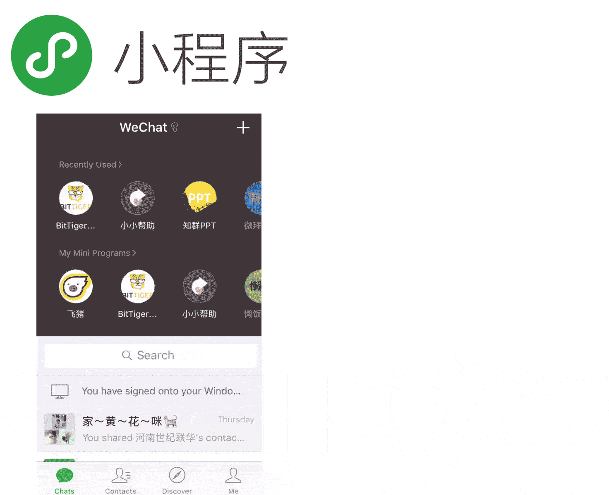
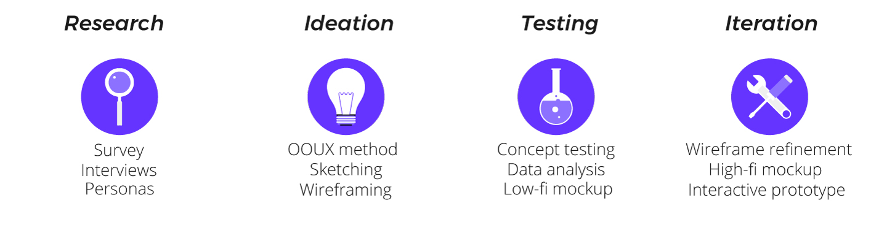
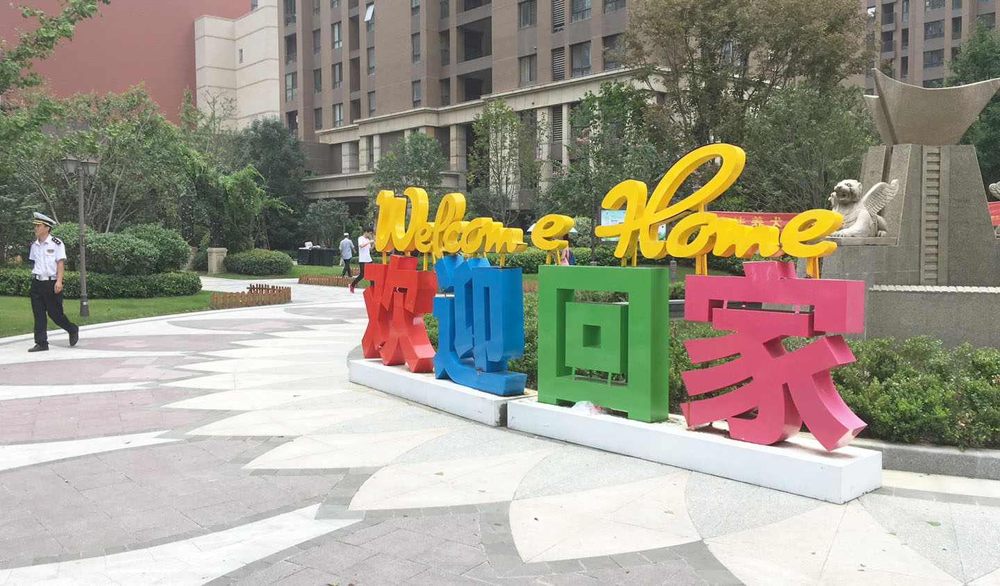
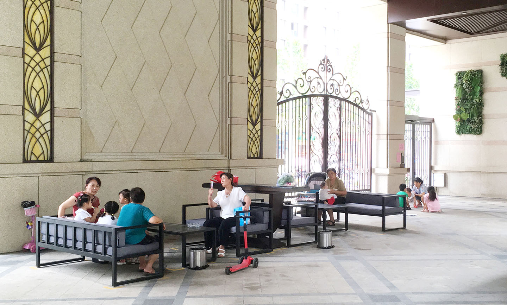
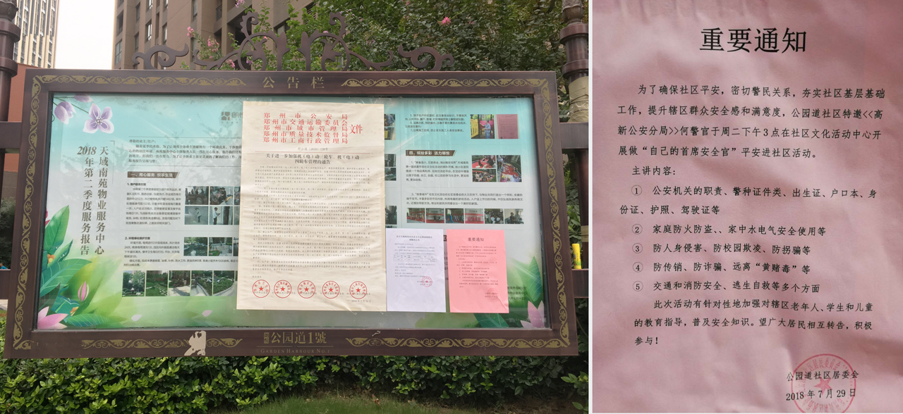
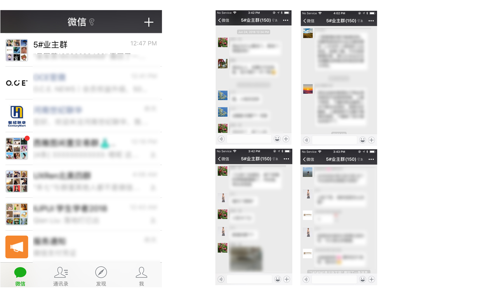
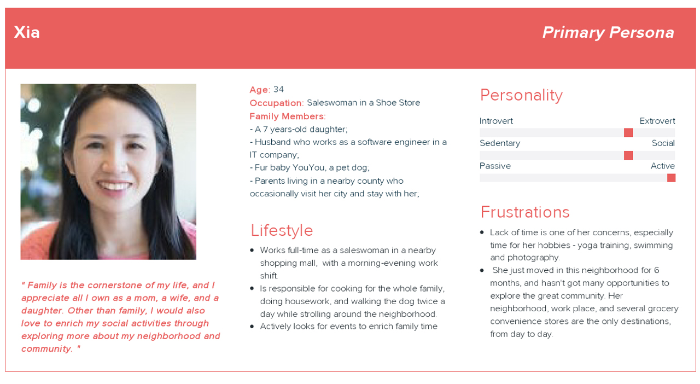
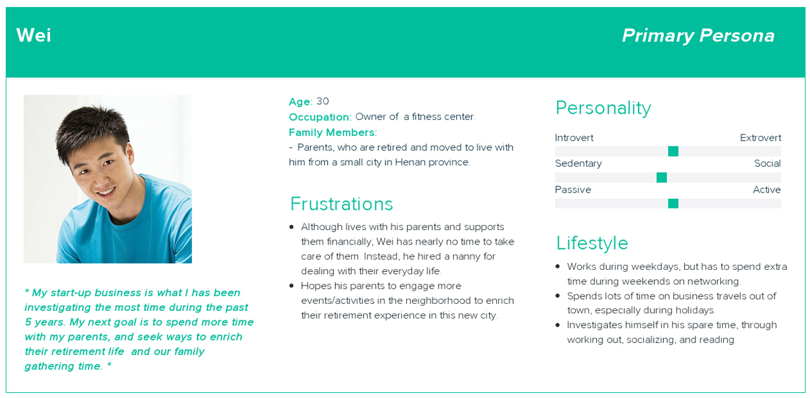
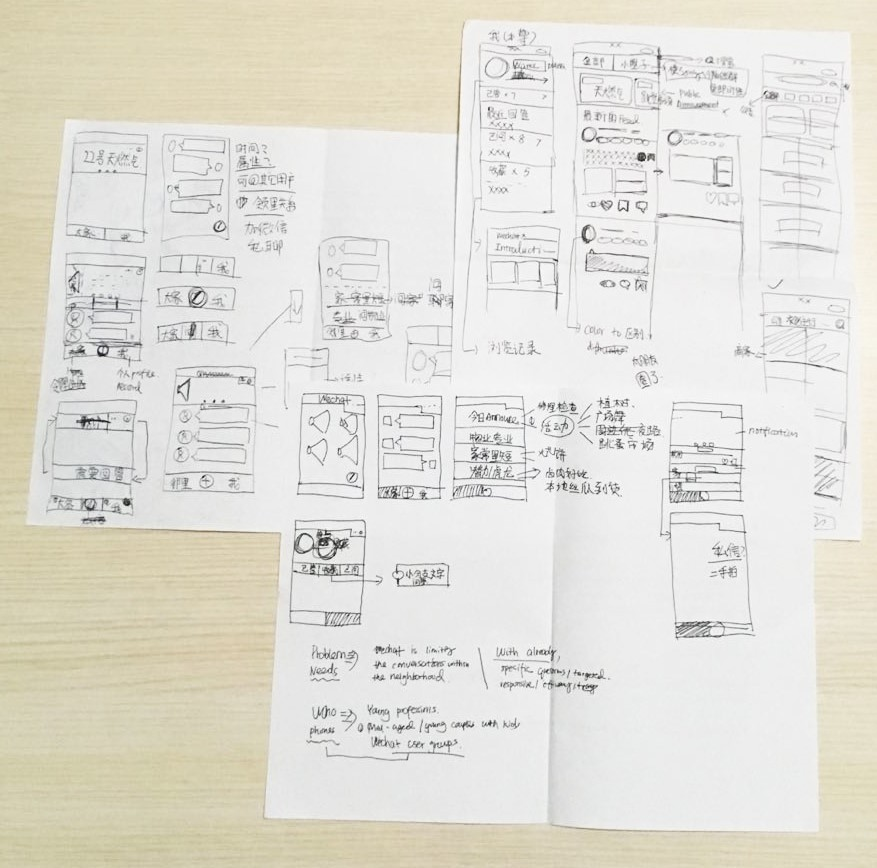
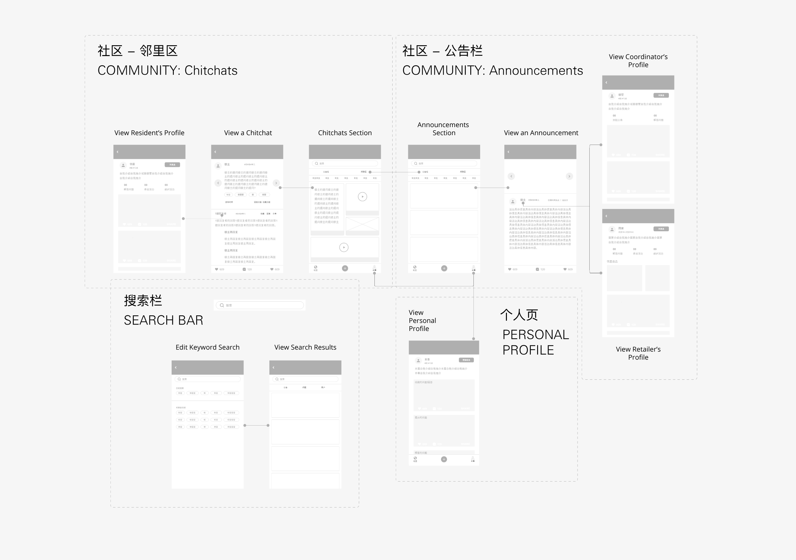

W.O.M WeChat
Mini-Program
Neighborhood Online Communication Platform • Mobile • UX

My Role
User Experience Designer | 07 - 08. 2018
Tools
Adobe XD, Illustrator, After Effects, Balsamiq
What I Did
Defined Pain Points, Scoped Design Problem, Wireframing, Low-fi to High-fi Mockups, Interactive Prototype, Video Editing
Project Collaborator
Long Yeah Group LLC Neighborhood Management Team
A Long Yeah Neighborhood Resident: "I don't even know that we are having a flea market today in our neighborhood! How can I more easily foresee such events and plan ahead for attending next time?"
Neighborhood Communication Lacks Efficiency and Effectiveness
My family moved into our new home in September 2017, which locates at a newly constructed residential neighborhood in Zhengzhou City. Overall, our living experience with the new neighborhood has beyond our expectation in a positive way, especially with the urban planning, public facilities, living convenience, and neighborhood management coordinators. Neighborhood management coordinators are responsible for maintaining a comfortable, safe, convenient, and engaging living experience for all neighborhood residents, by handling various management tasks and communicating effectively.
while I appreciated that their hard works to stay on top of most tasks, as a resident, I noticed the lack of efficient and effective communication from those coordinators to us, as well as among residents ourselves. With that being said, I decided to challenge myself to utilize my design skills to alleviate this real-life problem.
Design Solution
Collaborated with our neighborhood management team for two months, I designed a WeChat social mini-program, W.O.M, to enable efficient and engaging neighborhood communication.
Why Designing a WeChat Mini-Program?
WeChat mini-programs are small applications hosted inside WeChat, the most popular Chinese messaging and social media application. The use cases of WeChat mini-program cover public services, online retailing, educational platforms, lifestyle, etc. Until January 2018 - the one-year anniversary of WeChat mini-program - the user population has reached 170 hundred million. Being light and with no need to be downloaded to phones as regular mobile Apps, WeChat mini-programs are accessible by both iOS and Android WeChat users, and they function just like apps. On average, WeChat mini-programs have a lower cost of development - about 20% of a native App.
More importantly, considering the established WeChat user base in my neighborhood and desired features, designing a WeChat mini-program
nicely fits the project scope.
(Statistics Source: www.p5w.net)
Design Process
"W.O.M" Interpretation
The English name I came up for this WeChat mini-program - W.O.M - stands for “words of mouth”, the procedure of spreading information orally among individuals, mostly in a casual and informal discourse. The wording as well as the meaning of W.O.M aligns well with the first two characters in the mini-program’s original Chinese name "口口". In addition, the last character in its Chinese name, "悦", creates a pun by matching the Chinese character for “Yeah” in “Long Yeah Group,” while also implies an additional layer of meaning of pleasure and delight to meet the branding expectation from the stakeholders.
W.O.M WeChat Mini-Program Interactive Prototype
W.O.M WeChat Mini-Program Demo Video
To present the design more inclusively while to keep the original UI, I created a demo video to navigate English speaking audiences through this mobile design project.
User Research
In order to make sure this is a real problem and understand other residents' current experience of neighborhood communication, I started off the whole user-centered design approach by interviewing 6 residents and 3 neighborhood management coordinators, in a semi-formal format. For reaching out more residents, I spread surveys via WeChat group chats, and received 31 valid responses within 2 days.
About My Residential Neighborhood
Our apartment locates in the New Technology District in Zhengzhou, the capital city of Henan Province in China. Based off information provided by neighborhood management coordinators, our neighborhood has 11 residential buildings,1600+ apartment units, and the current occupation rate is around 60%. Living experience is considered to be convenient by most residents; there are educational institutions, hospitals, shopping malls and other entertaining places, retailers, as well as various public transportation options.
Four Types of Neighborhood Communication and Limitations
1. Casual Chitchats
Information Type and Flow:
As the most basic communication form, chitchats naturally occur between neighborhood individuals, especially between ones who often strolling in the shared space around the neighborhood.
Limitations:
Casual chitchats can hardly be a medium to convey information that carries lots of precise details.
Quotes
Resident A: "[Translated] I know better about my neighbors' WeChat personas than who they really are in person."
Resident B: "[Translated] I am a talkative person but don't have much incentives to communicate with my neighbors in person. If there are more interactive opportunities, I would love to form interesting conversations with them."
2. Physical Flyers and Banners
Information Type and Flow:
Posting physical flyers and banners around the neighborhood is a traditional method for public announcements from the management team. For my neighborhood, announcements from the management team usually includes upcoming community events, updated neighborhood policies, and residential inspections notices.
Limitations:
Printed paper-based announcements are fragile, because of unforeseen weather conditions and manual damage. In addition, they lack the access to all residents as expected. According to the survey, only 40% residents rated this type of communication as "satisfied."
Quotes
Neighborhood Coordinator A: "[Translated] We've received several complaints from our residents about the lack of getting notified about new announcements. Not all of them have time, energy, or the habit of regularly checking the only announcement board in the center area in our neighborhood. Because of that, last month, for example, we had to reschedule several natural gas indoor inspections after the scheduled date, which took much more time than expected."
3. Resident WeChat Group Chats based off Residential Buildings
Information Type and Flow:
Every residential building in our neighborhood has a WeChat group, which is managed by each of their neighborhood building coordinator. Currently, 98% of residents have joined their assigned WeChat group chats accordingly.
The information in the group chats covers a few:
1) comments and feedback from residents to the neighborhood management team,
2) general questions asked by residents,
3) casual chitchats
4) advertisements about nearby business retailers, posted by the building coordinator
5) reposted announcements from the announcement board, posted by the building coordinator as reminders.
Limitations:
In general, due to the large number of messages received, WeChat users share the habit of turning off the notifications of group conversations, especially for groups that are not their family, coworkers, or close friends. According to my survey, 100% of residents reported that they mute our building WeChat group conversations; 30% participants check back later on the same day for sure; 50% participants check back later if time and energy allows; the rest of the 20% said that they seldomly browse the group messages (on average less than 2 times per week).
In this case, although residents are provided with WeChat groups to connect with their building coordinator and their neighbors, a great portion of those rich information cannot reach their targeted audiences, especially time-wisely. As a result, not every question or inquiry will receive responses, either. Meanwhile, due to the large number of uncategorized messages, important announcements are much likely to cluster with random chitchats, and be overlooked by residents.
Quotes
Resident C: [Translated] "When the (WeChat building) group messages accumulate too many, I even don't have the patience to open the conversation."
Resident D: [Translated] "I love to ask my neighbors questions in our WeChat group; however, it's hard to keep track on their answers. Sometimes they will specifically @ or mention me to provide an answer, but it absolutely doesn't always happen. I couldn't avoid missing some of their responses and valuable pieces of information."
4. Long Yeah Group LLC WeChat Subscription Account

Information Type and Flow:
Long Yeah Group LLC also manages an official account on WeChat to regularly post subscription messages, mainly for their estate marketing purpose.
Limitations:
The contents are less related with residents who have already purchased a residential unit from Long Yeah Group LLC.
Quotes
Resident E: [Translated] "I got to know this estate through their WeChat official account two years ago... Unfortunately, now I don't find the advertisements valuable to me anymore...but thank you for reminding me to unfollow them, lol."
To visually summarize the information I collected about the limitations of the current neighborhood communication methods:

Ideation
Personas Based on User Research
 Product Features
Collaborated with the neighborhood management team, I listed out all the potential features based on my research insights, divided them into groups based off the information type needed to be communicated in my neighborhood, and organized them by work flows. We decided to include 3 sections into our WeChat Mini-Program to logically organize all communication and information types:
1. Announcements Section: (get informed about the community feeds that are relative to them)
2. Newsfeeds Section: (get informed about the community feeds that are relative to them)
3. Personal Profile: (get informed about the community feeds that are relative to them)
4. Except for the three main sections, include a search bar to search contents (inquiry based off current contents), ask questions/answer questions (directly inquiry information)
Sketches
OOUX Method
Object-Oriented User Experience(OOUX) is a design methodology advocating defining user actions and task flows
after abstracting real-world objects from user goals. I experimented with this approach in the ideation phase to thoroughly organize related information(objects)
for supporting generating effective and efficient neighborhood communication.
(Read more about OOUX from the original article.)
Initial Wireframing
Concept Testing
Process
The initial interactive wireframe was tested with 6 neighborhood residents, who didn't participate during the research phase, on POP (Prototyping on Paper) mobile. For each testing session, they were given 10 minutes to self-explore the mini-program wireframe while thinking aloud about their interpretations of the user interface. After, they were asked to accomplish these tasks while kept thinking aloud: 1) contact an event organizer regarding an announcement, and figure out a way to mark it for future reference; 2) figure out a way learn more about a neighbor who published a chitchat conversation; 3) figure out a way to start a chitchat conversation; 4) figure out a way to navigate to the address of an event; 5) find out the specialties about a retailer; 6) figure out a way to evaluate their activities on W.O.M; and 7) figure out a way to look into a topic that they are curious about.
Findings
- 6 out of 6 participants questioned the logic to post a chitchat post on the chitchat page.
[Translated] "Will I post a chitchat question all the time, or post contents based on the page I am on? For example, when I am on 'community-announcement or personal profile' it kinda makes sense that I am more likely to post an announcement, or something related with my personal account, than a chitchat conversation which will be shown on chitchats page."
- 5 out of 6 participants were confused about the purpose of the filter bar. 4 of the 5 questioned about the contradictory finger motions between "swiping on the filter bar to change tags" with "taping on tabs above to select between announcements and chitchats".
[Translated] "I thought it(the filter bar) is static. If it can be used for filtering posts, will the fonts be too tiny vs. the size of a fingertip?"
[Translated] "I am not comfortable to interact with the filter bar, because it is too closed to the tab bar. I will be nervous about unexpected modifying it (tab bar)."
- 4 out of 6 participants questioned about how the announcements and the chitchats posts would be ordered. They assumed they are order chronologically, but found no hints.
[Translated] "After I posted a question, I believe it will appear as the first on the (chitchats) page, right?"
[Translated] "Is there a way to see the oldest posts rather than pure scrolling down?"
[Translated] "If I want to act like Lei Feng, who loves to help with unsolved questions, is there a way to navigate me to those questions for my input?"
- 6 out of 6 participants expressed positive attitudes with having such a platform for neighborhood communication.
[Translated] "Thank you for jotting one idea that lingered in my mind for so long on paper. I can definitely tell we(residents) can benefit a lot (from this program)."
[Translated] "Are we really going to build this mini-program? Please tell me a 'Yes'."